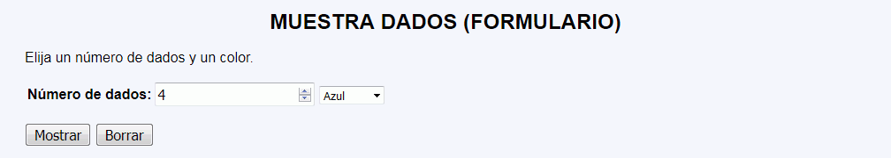
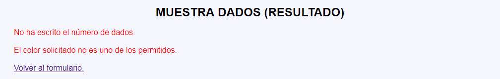
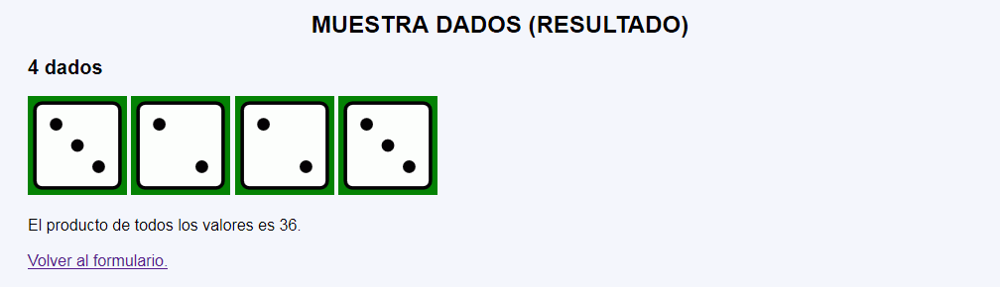
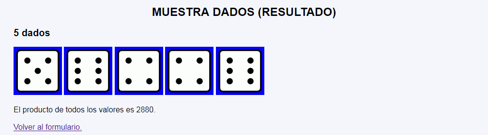

Muestra dados - Ejemplo de programa
Nota: El día del examen los alumnos no tienen acceso a este ejemplo, solamente tienen acceso a las capturas del apartado anterior.
Un ejemplo de programa puede probarse en la ventana siguiente:
En este ejercicio se debe crear un programa que muestre el número de dados indicado por el usuario con el color de fondo indicado por el usuario y con valores generados al azar. Además, el programa mostrará el producto de los valores obtenidos.




<h2>3 dados</h2>
<p>
<img src="img/5.svg" alt="5" width="100" height="100" style="background-color: yellow;"/>
<img src="img/2.svg" alt="2" width="100" height="100" style="background-color: yellow;"/>
<img src="img/3.svg" alt="3" width="100" height="100" style="background-color: yellow;"/>
</p>
<p>El producto de todos los valores es 30.</p>
Nota: El día del examen los alumnos no tienen acceso a este ejemplo, solamente tienen acceso a las capturas del apartado anterior.
Un ejemplo de programa puede probarse en la ventana siguiente: